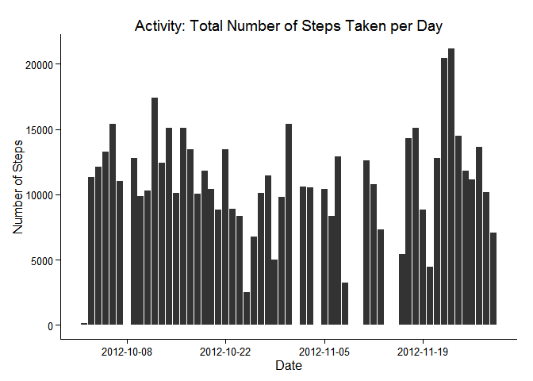
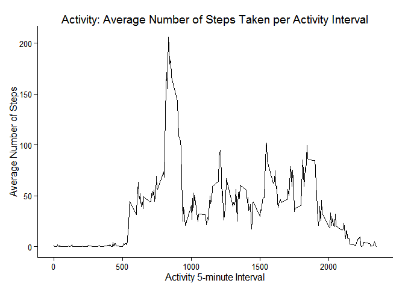
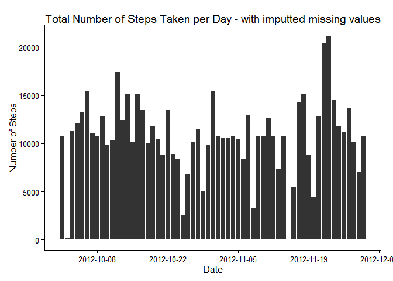
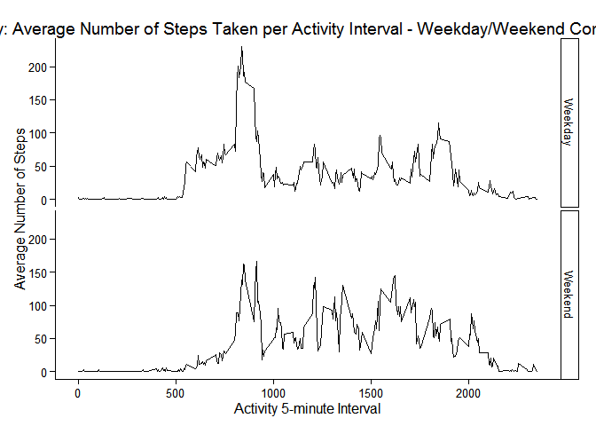

library(knitr)## Warning: package 'knitr' was built under R version 3.1.3opts_chunk$set(fig.path="figure/")It is now possible to collect a large amount of data about personal movement using activity monitoring devices such as a Fitbit, Nike Fuelband, or Jawbone Up. These type of devices are part of the “quantified self” movement - a group of enthusiasts who take measurements about themselves regularly to improve their health, to find patterns in their behavior, or because they are tech geeks. But these data remain under-utilized both because the raw data are hard to obtain and there is a lack of statistical methods and software for processing and interpreting the data.
This report makes use of data from a personal activity monitoring device. This device collects data at 5 minute intervals through out the day. The data consists of two months of data from an anonymous individual collected during the months of October and November, 2012 and include the number of steps taken in 5 minute intervals each day.
Dataset: Activity monitoring data [52K]
The variables included in this dataset are:
. steps: Number of steps taking in a 5-minute interval (missing values are coded as NA)
. date: The date on which the measurement was taken in YYYY-MM-DD format
. interval: Identifier for the 5-minute interval in which measurement was taken
The dataset is stored in a comma-separated-value (CSV) file and there are a total of 17,568 observations in this dataset.
Load the libraries required by the analysis.
library(ggplot2)## Warning: package 'ggplot2' was built under R version 3.1.3library(doBy)## Warning: package 'doBy' was built under R version 3.1.3## Loading required package: survival
## Loading required package: splineslibrary(scales)## Warning: package 'scales' was built under R version 3.1.3Read in the Activity data. Keep the original data (datRaw). Create a subset of the Activity data that excludes missind data (datClean).
datCon <- unz("activity.zip", filename="activity.csv")
datRaw <- read.csv(datCon, header=TRUE, sep=",")
datClean <- na.omit(datRaw)Summarise the clean Activity Data. Calculate the total number of steps taken each day across all time intervals for that day. Save the results in a data frame for reporting.
datDaySumClean <- summaryBy(steps ~ date, data = datClean, FUN = c(sum), keep.names=TRUE)
datDaySumClean$date <- as.Date(datDaySumClean$date, format = "%Y-%m-%d")A graphic of the total number of steps taken per day.
histSteps1 <- ggplot(datDaySumClean, aes(x=date, y=steps))
histSteps1 <- histSteps1 + geom_histogram(binwidth=5, stat="identity")
histSteps1 <- histSteps1 + scale_x_date(breaks="2 weeks", labels=date_format("%Y-%m-%d") )
histSteps1 <- histSteps1 + theme_classic()
histSteps1 <- histSteps1 + labs(title = "Activity: Total Number of Steps Taken per Day")
histSteps1 <- histSteps1 + ylab("Number of Steps") + xlab("Date")
histSteps1
Calculate the mean and median total number of steps taken per day.
datCleanMean <- mean(datDaySumClean$steps)
datCleanMedian <- median(datDaySumClean$steps)The mean number of steps taken per day is 1.076618910^{4}, whilst the median number of steps taken per day is 10765.
Calculate the average number of steps taken per 5-minute interval across all days.
datIntervalMean <- summaryBy(steps ~ interval, data = datClean, FUN = c(mean), na.rm=TRUE, keep.names=TRUE)A graphic of the average number of steps taken per 5-minute interval across all days.
lineInt1 <- ggplot(datIntervalMean, aes(x=interval, y=steps))
lineInt1 <- lineInt1 + geom_line()
lineInt1 <- lineInt1 + labs(title = "Activity: Average Number of Steps Taken per Activity Interval")
lineInt1 <- lineInt1 + ylab("Average Number of Steps") + xlab("Activity 5-minute Interval")
lineInt1 <- lineInt1 + theme_classic()
lineInt1
Identify which time interval has the maximum number of steps.
IntervalMaxAvSteps <- datIntervalMean[order(datIntervalMean[,2],decreasing=TRUE)[1],1]Time interval 835 contains the maximum number of steps, on average, across all the days.
The Activity data has mssing values for some time intervals.
The strategy for filling in all of the missing values in the Activity data is to replace then with the corresponding mean for the corresponding 5-minute interval.
Identify the observations with missing data. Apply the mean of the corresponding 5-minute time interval. Apply the imputted values to the Activity dataset. Calculate the total number of steps taken each day across all time intervals for that day.
datNA <- subset(datRaw, is.na(steps), select = -steps)
datNAIntMean <- merge(datNA, datIntervalMean, by="interval")
datNAIntMean <- datNAIntMean[, c("steps", "date", "interval")]
datCleanFull <- rbind(datNAIntMean, datClean)
datDaySumFull <- summaryBy(steps ~ date, data = datCleanFull, FUN = c(sum), keep.names=TRUE)
datDaySumFull$date <- as.Date(datDaySumFull$date, format = "%Y-%m-%d")A graphic of the total number of steps taken per day after the imputted missing values have been included.
histSteps2 <- ggplot(datDaySumFull, aes(x=date, y=steps))
histSteps2 <- histSteps2 + geom_histogram(binwidth=5, stat="identity")
histSteps2 <- histSteps2 + scale_x_date(breaks="2 weeks", labels=date_format("%Y-%m-%d") )
histSteps2 <- histSteps2 + labs(title = "Total Number of Steps Taken per Day - with imputted missing values")
histSteps2 <- histSteps2 + ylab("Number of Steps") + xlab("Date")
histSteps2 <- histSteps2 + theme_classic()
histSteps2
Recalculate the mean and median total number of steps taken per day.
datCleanFullMean <- mean(datDaySumFull$steps)
datCleanFullMedian <- median(datDaySumFull$steps)The mean number of steps taken per day after the imputted missing values has been applied is 1.076618910^{4}, whilst the median number of steps taken per day is 1.076618910^{4}.
Including the imputted missing values has not changed the mean value as the imputted value was the mean of the interval. The median value has moved and now reflects the mean value. ## Are there differences in Activity Patterns Between Weekdays and Weekends?
Factor the full dataset of Activity data to classify the days as being a ‘weekday’ (Monday ton Friday inclusive), or a ‘weekend’ (Saturday or Sunday).
TheWeekend <- c('Saturday', 'Sunday')
datCleanFull$DayClass <- factor((weekdays(as.Date(datCleanFull$date)) %in% TheWeekend)+1L,
levels=1:2, labels=c('Weekday', 'Weekend'))Calculate the average number of steps taken per 5-minute interval across all days split across Weekdays and Weekends.
datIntervalMeanFull <- summaryBy(steps ~ interval + DayClass, data = datCleanFull, FUN = c(mean), na.rm=TRUE, keep.names=TRUE)A graphic of the average number of steps taken per 5-minute interval across all days, comparing activity for weekdays compared to weekends.
lineInt2 <- ggplot(datIntervalMeanFull, aes(x=interval, y=steps))
lineInt2 <- lineInt2+ geom_line()
lineInt2 <- lineInt2 + facet_grid(DayClass~.)
lineInt2 <- lineInt2 + labs(title = "Activity: Average Number of Steps Taken per Activity Interval - Weekday/Weekend Comparision")
lineInt2 <- lineInt2 + ylab("Average Number of Steps") + xlab("Activity 5-minute Interval")
lineInt2 <- lineInt2 + theme_classic()
lineInt2